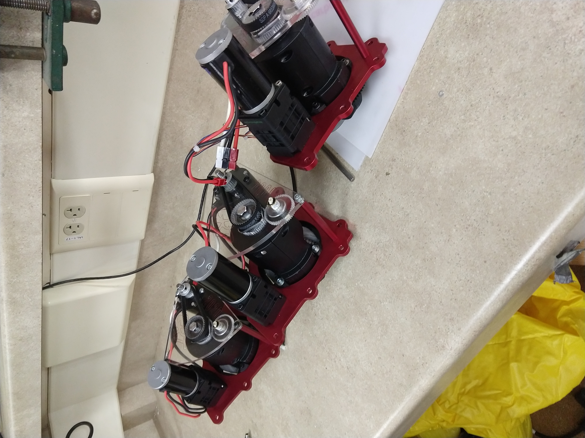
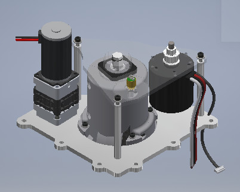
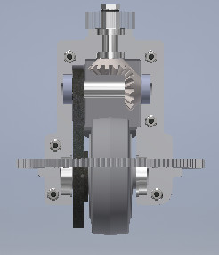
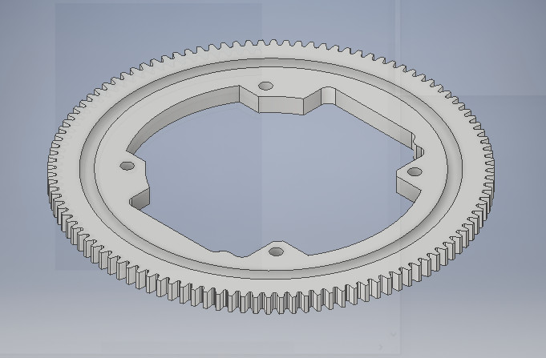

Gunn Robotics Team (FRC team 192) Swerve drive

I was the drivetrain lead on my robotics team (FRC 192) for the 2020 season. The drivetrain above is my design of the omnidirectional Swerve drivetrain, which means it can make the robot rotate and translate at the same time. Each robot usually has four swerve modules mounted on the four corners of the robot. This design weighs 10% less and has a 40% smaller footprint from the previous year's and is mounted on just two sides of the robot instead of four.

all four of 'em. Photo creds go to Kevin Yu.
We made a 3D printed ABS fork to house the driving gears. One of my team members 3D printed a fork out of PLA and dropped it from 3 ft as a test to see if his 3D printer, which was more convenient to use than the school's, can print reliable forks. Unfortunately, the brittle PLA fork shattered. A small change we made from last year's drivetrain was smoothing out the bottom of the fork so that it was resilient to any ledges coming from the ground.

A tour of the drive system: The driving motor connects to a pulley that is attached to the driving axle, shown at the top of the assembly. The driving axle drives the bevel gear perpendicular to it. The sprocket attached to the other end of the driven bevel's axle drives the sprocket attached to the wheel, causing forward wheel rotation.


The rotation gear (right), which allows for wheel rotation on the axis normal to the ground, is made of laser cut Delrin and the groove for bearing balls is cut on the lathe.
Unfortunately, we didn't get to actually test the swerve drive on the robot during the 2020 season due to COVID. However, the current 2022 controls team managed to get it working to test out their code while the new drivetrain team designs their iteration of swerve! Here's a video of one of the four swerve modules running (video courtesy of Kevin Yu).
Cost breakdown per module
| Absolute Encoder** | $50.00 | Belt 80t | $8.76 |
| NEO Brushless Motor** | $40.00 | Bevel 15t (x2) | $24.99 |
| Sprocket 12t | $10.81 | Chain #25 (46 links) | $11.99 |
| Sprocket 36t | $22.71 | BAG Motor | $29.99 |
| Pulley 20t | $8.06 | Versa Planetary Stack | $49.96 |
| 3.5 in Wheel | $12.99 | Gear 26t | $10.99 |
| Total | $281.25 |
**Raw costs; does not account for material recycling that saved on average $72 per module
Specs
| Drive Motor | NEO brushless motor |
| Weight | 4.14 lbs/module |
| Module dimensions (l x w x h) | 7.58 in. x 7.58 in. x 4.23 in. |
| XY footprint on robot | 28.50 in² |
| Ground clearance | 1.5 in |
| Wheel diameter | 3.5 in |
| Theoretical translation speed | 14.3 ft/s |
| Theoretical rotation speed | 94 rpm |